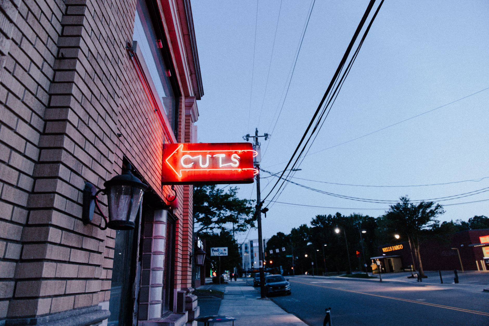

Are you a small business owner struggling to reach new customers online? Short-form video is the answer. It’s a powerful, engaging way to connect with your community and drive traffic to your business. This guide will walk you through everything you need to know to create and promote short-form videos on TikTok, Reels, and YouTube Shorts, specifically for local businesses. We’ll cover content ideas, filming tips, editing techniques, and how to measure your success. Let’s get started.

Understanding Short-Form Video’s Potential for Local Businesses
Short-form video is exploding in popularity, and for good reason. People are consuming more video content than ever before, and they’re increasingly drawn to the quick, entertaining format. For local businesses, this translates to a massive opportunity to build brand awareness, showcase your products or services, and drive foot traffic. Consider this: 61% of consumers say they’ve purchased a product after seeing it in a short-form video. That’s a significant percentage, demonstrating the direct impact these videos can have on your bottom line. The key is to create content that’s authentic, relatable, and relevant to your local audience. You don’t need fancy equipment or a professional crew - just a smartphone and a genuine desire to connect with your community. Let’s break down how to do that effectively.
TikTok: A Deep Dive for Local Marketing
TikTok is arguably the most popular short-form video platform right now, and it’s particularly well-suited for local businesses. The platform’s algorithm is designed to show users content they’ll enjoy, even if they don’t follow you. This means your videos have a higher chance of being seen by a wider audience. TikTok’s strength lies in its trend-driven culture. Participating in trending sounds and challenges can significantly boost your video’s visibility. However, don’t just jump on every trend - make sure it aligns with your brand and target audience. For example, a local bakery could create a video showcasing a behind-the-scenes look at decorating a cake using a popular sound. Another tactic is to create "day in the life" videos, showing what it's like to run your business. A local mechanic could film a short clip of a customer interaction, highlighting their friendly service. TikTok’s analytics provide valuable insights into your video performance, including views, likes, comments, and shares. You can use this data to refine your content strategy and create videos that resonate with your audience. Currently, 68% of TikTok users are between the ages of 18 and 34, representing a significant portion of your potential customer base.

Reels: Instagram’s Answer to Short-Form Video
Instagram Reels are Instagram’s direct competitor to TikTok, and they’re incredibly effective for local businesses. Reels are integrated directly into the Instagram app, making them easy for your followers to discover and engage with. Reels are great for showcasing product demos, tutorials, or behind-the-scenes glimpses of your business. They’re also ideal for highlighting customer testimonials or running contests and giveaways. Instagram’s algorithm favors Reels, giving them a higher chance of being shown in users’ feeds. You can use Instagram’s built-in editing tools to add music, text, and effects to your videos. Experiment with different video lengths - Reels can range from 15 seconds to 90 seconds. A local florist, for instance, could create a Reel demonstrating how to arrange a beautiful bouquet, using trending music. A local coffee shop could film a time-lapse video of a latte art creation. Instagram’s analytics will show you how many people watched your Reel, how long they watched it for, and whether they engaged with it. As of Q2 2024, Reels account for 20% of Instagram’s total content, demonstrating their widespread adoption and influence.
YouTube Shorts: Leveraging the YouTube Platform
YouTube Shorts are a relatively newer addition to the YouTube platform, but they’re quickly gaining popularity. YouTube Shorts are great for reaching a broader audience, as they’re accessible to anyone with a YouTube account. Unlike TikTok and Reels, YouTube Shorts are primarily discovered through the YouTube app, rather than through algorithmic feeds. This means you’ll need to optimize your videos for search to ensure they’re found by potential customers. Create compelling thumbnails and titles that include relevant keywords. A local pet store could create a YouTube Short showcasing adorable puppies or kittens available for adoption. A local music teacher could share short clips of students performing. YouTube Shorts are ideal for longer-form content that can be edited down into shorter, more digestible videos. The platform’s analytics provide detailed information about your video’s performance, including views, watch time, and subscriber growth. Currently, YouTube Shorts account for approximately 17% of total YouTube watch time, highlighting their growing importance within the platform.
Content Ideas Specific to Local Businesses - Part 1
Let’s brainstorm some specific content ideas that will resonate with your local audience. Remember, authenticity is key. Don’t try to be something you’re not. Focus on showcasing what makes your business unique.
- "Meet the Team" Videos: Introduce your employees and highlight their expertise. A local restaurant could film a short clip of the chef preparing a signature dish.
- Product/Service Demos: Show how your products or services work. A local hardware store could demonstrate how to install a light fixture.
- Customer Testimonials: Ask satisfied customers to share their experiences. A local salon could film a customer raving about their haircut.
- Behind-the-Scenes Content: Give your audience a peek behind the curtain. A local brewery could film the brewing process.
- Local Events & Promotions: Promote upcoming events or special offers. A local bookstore could announce a book signing.
Content Ideas Specific to Local Businesses - Part 2
Now, let’s expand on those ideas and add some more creative concepts. For more on this, see How Often Should a Small Business Blog?.
- "Day in the Life" Videos: Show what a typical day looks like at your business. A local gym could film a trainer leading a class.
- "How-To" Tutorials: Teach your audience a valuable skill. A local gardening store could demonstrate how to plant a flower.
- Community Spotlights: Highlight other local businesses or organizations. A local coffee shop could feature another local bakery.
- Seasonal Content: Create videos that are relevant to the current season or holidays. A local ice cream shop could film a summer-themed treat.
- Local Landmarks & History: Share interesting facts about your town or city. A local tour guide could film a short clip of a historical landmark.
Shooting Short Videos on a Budget
You don’t need expensive equipment to create high-quality short-form videos. Your smartphone is perfectly capable of capturing stunning footage. Here’s what you’ll need:
- Your Smartphone: Most modern smartphones have excellent cameras.
- Good Lighting: Natural light is your best friend. Shoot near a window or outdoors. If you need artificial light, consider a simple ring light.
- A Stable Surface: Use a tripod or prop your phone up against something to avoid shaky footage.
- A Microphone (Optional): If you’re recording audio, a simple external microphone can significantly improve sound quality.
Editing Short Videos for Maximum Impact
Editing is crucial for creating engaging short-form videos. Here are some tips:
- Keep it Short: Aim for videos that are 15-60 seconds long.
- Add Text Overlays: Use text to highlight key points or add context.
- Use Trending Music: Trending music can significantly boost your video’s visibility.
- Add Transitions: Transitions can make your videos more visually appealing.
- Use Captions: Captions make your videos accessible to a wider audience.
Promoting Your Short-Form Video Content Locally
Creating great content is only half the battle. You need to promote it to reach your local audience.
- Share Your Videos on Your Social Media Channels: Post your videos on Facebook, Instagram, and Twitter.
- Run Local Targeted Ads: Use Facebook and Instagram ads to reach people in your area.
- Partner with Local Influencers: Collaborate with local influencers to promote your videos.
- Engage with Your Audience: Respond to comments and messages.
Measuring Success: Analytics for Local Short Video Campaigns
Tracking your results is essential for understanding what’s working and what’s not. Here’s what to look for:
- Views: How many people are watching your videos?
- Watch Time: How long are people watching your videos?
- Likes, Comments, and Shares: How are people engaging with your videos?
- Website Traffic: Are your videos driving traffic to your website?
- Conversions: Are your videos leading to sales or other desired actions?
Currently, 83% of marketers say that video marketing is important, and 66% say that video is the most effective marketing channel. By tracking these metrics, you can optimize your content strategy and maximize your return on investment.
Ready to start creating short-form videos for your local business? Schedule a free consultation with us at [LINK: FusedDistribution.com] to discuss your marketing goals and how we can help you succeed. Let’s build a strategy that gets you noticed in your community.
Related
- Evergreen Content Ideas For Small Business Website
- How Often Should a Small Business Blog?
- Content Marketing Ideas For Local Businesses: Stop Guessing, Start Getting Found
Read next: Evergreen Content Ideas For Small Business Website